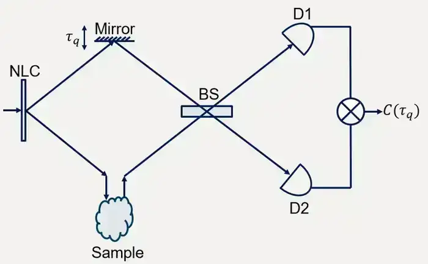

The finding
In 2007 Gregory Engel and colleagues reported two-dimensional electronic spectroscopy of a photosynthetic complex from green sulphur bacteria, showing oscillatory signals interpreted as electronic coherence lasting several hundred femtoseconds — far longer than expected in a warm, wet protein at room temperature.
Maps, diagrams and images


The suggestion was that coherence might allow the excitation to sample multiple pathways simultaneously, improving the efficiency of energy transfer. The claim became a flagship example of 'quantum biology'.
The corrections
Subsequent work argued that much of the long-lived oscillation was vibrational rather than electronic — nuclear motion in the protein, not a superposition of electronic states. Later experiments at physiological temperatures found shorter electronic coherence than the original reports. The current consensus is that coherence exists but is brief, and that its contribution to transfer efficiency is unclear and probably small.
The transfer itself is remarkably efficient, and that efficiency is real; whether quantum coherence is the explanation is the open question.
Documented: the spectroscopy, and the oscillations.
Revised: long-lived electronic coherence; much is vibrational.
Documented: high efficiency of energy transfer.
Contested: whether coherence contributes to that efficiency.
The honest label: live debate — a real quantum effect in biology, with the functional claim downgraded since 2007.
Why it is in the archive
Because it is the legitimate quantum-biology result that the 'quantum healing' pages borrow their authority from, and the two are worth reading together.
Open resources on this topic
- PapersOpen-access articles: DOAJ · PubMed Central · Internet Archive Scholar
- BooksPublic-domain and borrowable copies: Open Library · Project Gutenberg · Google Books · Internet Archive
Cite this page
Momin, S. (2026). Quantum Coherence in Photosynthesis. The Larger World Archive. https://drsamonline.github.io/LARGE_GLOBE/quantum-photosynthesis.htmlMomin, Sohil. “Quantum Coherence in Photosynthesis.” The Larger World Archive, 2026, https://drsamonline.github.io/LARGE_GLOBE/quantum-photosynthesis.html.Momin, Sohil. “Quantum Coherence in Photosynthesis.” The Larger World Archive, 2026. https://drsamonline.github.io/LARGE_GLOBE/quantum-photosynthesis.html.@misc{quantum2026quantum,
author = {Momin, Sohil},
title = {Quantum Coherence in Photosynthesis},
year = {2026},
howpublished = {The Larger World Archive},
url = {https://drsamonline.github.io/LARGE_GLOBE/quantum-photosynthesis.html},
note = {Last reviewed 20 November 2026}
}Last reviewed 20 November 2026 · Corrections policy · this page is not peer reviewed
Sources for this page
- Wikipedia, “Quantum biology” — the field and its resultsen.wikipedia.org
- Wikipedia, “Photosynthetic reaction centre” — the structureen.wikipedia.org
- Wikipedia, “Coherence (physics)” — what the term means hereen.wikipedia.org
- Wikipedia, “Förster resonance energy transfer” — the classical mechanismen.wikipedia.org